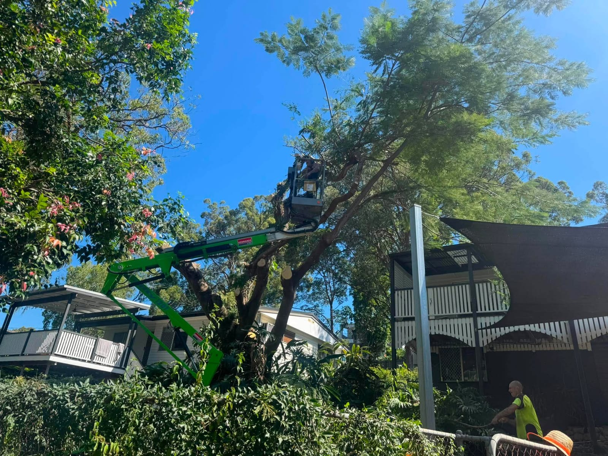

Tree Removal
Safe tree removal, big or small
Whether it's a towering gum hanging over the house or a dead tree you just want gone, we remove it safely and methodically. For tight blocks we dismantle the tree in sections and rope the pieces down, so nothing lands where it shouldn't. Our cherry picker and rigging let us work confidently around roofs, fences, pools and powerlines.
- Sectional dismantling for tight or built-up sites
- Hardwoods, gums, pines and dead or dangerous trees
- Full green-waste removal and clean-up included